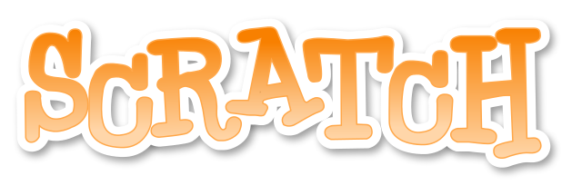

Lenguajes de programación¶
Comparativa de diferentes lenguajes de programación para la enseñanza.
Programación por bloques¶
Cursos Code¶
- Website: Code Studio
- Desarrollador: code.org
- Programación: por bloques (basado en Blockly)
- Gratuita y multiplataforma
Cursos guiados de diferentes niveles, desde 4 hasta 16 años, y de diferentes duraciones, desde 1 hora hasta 24 horas.
Enseñan los fundamentos de la programación imperativa y estructurada. Secuencias, bucles, condicionales, variables, funciones y parámetros.
Scratch¶
{kind=link}
- Website: Scratch
- Desarrollador: MIT
- Programación: por bloques
- Para programar: en navegador y PC
- Multitarea
- Software libre. Mutiplataforma.
Proyecto del MIT para enseñar programación a los niños en un entorno creativo. La web tiene multitud de proyectos compartidos que se pueden estudiar y reutilizar.
Tutoriales scratch: Tutorial de Scratch
Mblock¶
- Website: mBlock
- Desarrollador: Makeblock, basado en Scratch
- Programación: por bloques
- Para programar: PC y Arduino
- Multitarea
- Software libre. Mutiplataforma.
Proyecto basado en Scratch offline, que incluye instrucciones para Arduino y para los robots de Makeblock basados en Arduino.
Se puede programar en Scratch y también se pueden hacer programas con bloques para Arduino. Una vez descargados a Arduino, los programas son independientes y funcionan sin conexión al PC.
Programación de Smartphones¶
Los smartphones Android, los más extendidos, se programan con el lenguaje Java. Existen alternativas más sencillas orientadas a la educación.
AppLab¶
- Website: AppLab
- Desarrollador: code.org
- Programación: por bloques o en texto JavaScript
- Gratuita y multiplataforma
- Necesita crear una cuenta
- Las apps se ejecutan en cualquier smartphone a través del navegador
AppInventor¶
- Website: AppInventor
- Desarrollador: MIT
- Programación: por bloques
- Para programar: smartphones
Programación en texto¶
Estos lenguajes tienen un nivel de dificultad más alto al programarse escribiendo código en formato texto. Necesitan aprender una gramática que es más complicada que el simple movimiento de bloques. Como ventaja, son mucho más potentes y flexibles.
Arduino¶
- Website: Arduino
- Desarrollador: Arduino
- Programación: texto, basado en lenguaje C
- Para programar: Placas electrónicas Arduino y similares
- Software libre
- Gran cantidad de tutoriales de diversos niveles y calidad, orientados a proyectos DIY
Arduino se programa en lenguaje C con añadidos para hacerlo más sencillo. Está dirigido a la programación de circuitos electrónicos, montajes Maker y robots. Su objetivo es acercar la programación de los microcontroladores a los estudiantes sin preparación técnica.
Python¶
- Website: Python
- Desarrollador: Python foundation
- Programación: texto
- Para programar: PC
- Software libre. Mutiplataforma
- Muchos Tutoriales de muchos niveles, también en castellano.
Tutoriales:
Lenguaje multiparadigma, muy sencillo de programar y de entender. Es el lenguaje preferido para enseñar a programar de múltiples colegios y universidades de todo el mundo [1] por la rapidez y sencillez con la que se pueden hacer proyectos desde cero.
Por otro lado es uno de los primeros 5 lenguajes profesionales más usados y el que más crece en la actualidad [2]. Está apoyado por Google y es el lenguaje seleccionado para desarrollar sus aplicaciones de inteligencia artificial y Deep Learning, el futuro de la informática.
Tiene multitud de tutoriales de todo tipo y de todos los niveles, en inglés y en español y en formato libre y gratuíto.
A la hora de programar entornos gráficos y juegos para ordenador, el entorno Pygame facilita mucho esta tarea y ofrece ejemplos didácticos creados por otros programadores.
A su vez, el entorno Python Turtle emula al entorno del lenguaje LOGO, creado por Seymour Papert en el MIT para enseñar a los niños a programar.
Processing¶
- Website: Processing
- Desarrollador: Processing foundation
- Programación: texto, basado en lenguaje Java
- Para programar: PC y smartphones
- Grandes posibilidades gráficas
- Software libre. Mutiplataforma
- Tutoriales solo en ingles y con nivel Bachillerato.
Tutoriales:
Processing es un entorno de programación en Java que añade muchas facilidades para acercar la programación a los artistas. Tiene muchas facilidades para la programación de aplicaciones visuales con dibujos e imágenes en pantalla.
Al programar en Java, las aplicaciones se pueden subir a los smartphones y tablets basadas en Android.
Como desventajas, los tutoriales están en inglés y tienen un nivel de bachillerato y el lenguaje no facilita el aprendizaje de la programación.